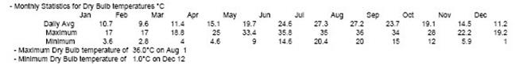
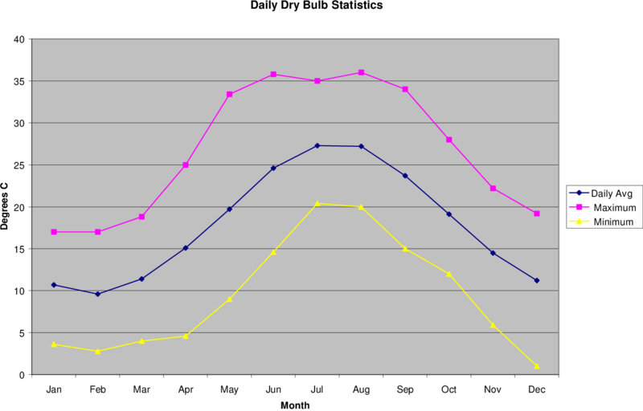

Reports/Files Produced by the Weather Converter¶
Minimally, two outputs are produced for every weather converter run: an audit / log file and a statistical report file. The audit / log file shows details of the processing (including any errors) as well as the statistical report. The statistical report produced from the weather conversion process is a short, but complete, picture of the weather data on the file. A single file (.stat extension) is produced of the "statistics" about the data file. A feature of the weather converter is to look in several design condition files for possible design conditions for the location from the stored design condition files (source: ASHRAE Handbook of Fundamentals, 2001). If found (WMO (World Meteorological Organization) id is used for matching), these will be shown in the report as well as included in the output data files (EPW and CSV, as applicable). In addition, the Köppen classification scheme is used to characterize the climate based on the data file's contents. Other statistics are given as well to help you visualize the data.
In the "reporting" section of the file, each line contains "tab-delimited" elements. This will allow you to easily place the data into a spreadsheet program for further refinement but the tabs are not as intrusive for "normal viewing" as commas.
Audit / Log File¶
As an example, the initial portion of an audit file is shown (illustrating the error reporting):
-Input File Type = WY2, with FileName = D:\DevTests\Release\WeatherData\04772.wy2
-Out of Range Data items will NOT be corrected.
Warning ** Dew Point = 5.00°C > Dry Bulb = 4.90°C on date = 5/ 1 at hour = 4
Warning ** Dew Point = 4.80°C > Dry Bulb = 4.40°C on date = 5/ 1 at hour = 5
Warning ** Dew Point = 4.70°C > Dry Bulb = 3.80°C on date = 5/ 1 at hour = 6
Warning ** Suspected missing data line after processing 365 days
Month = 0 Day = 0 Hour = 0
Processing continues but may be in error
Warning ** Suspected Blank line after processing 365 days
** Remaining records, if any, will be ignored
Warning ** Missing Data Found on Source Weather Data File
** Missing (and corrected) Aerosol Optical Depth, Number of items = 8760
Warning ** Out of Range Data Found on Weather Data File
** Out of Range Dew Point Temperatures > Dry Bulb Temperatures, Number of items = 3
- Start Date/End Date for Weather Source
Start Date = Jan 1; End Date = Dec 31
- Actual Data Years for Monthly Data**
Jan Feb Mar Apr May Jun Jul Aug Sep Oct Nov Dec
1966 1980 1964 1964 1968 1970 1977 1981 1979 1969 1974 1960
- ** Not all weather data sources represent contiguous years.
- ** Monthly data values may come from different years.
- Data Sources should be checked for relevancy to these statistics.
Average Delta DB Change = 0.76°C ; Std Dev = 0.73°C
Average Delta DP Change = 0.62°C ; Std Dev = 0.69°C
Average Delta Relative Humidity Change = 3.50% ; Std Dev = 3.63%
Average Delta Wind Speed Change = 0.93m/s ; Std Dev = 0.88m/s
Hourly Dry Bulb temperature change trigger = minimum of 11.07°C and 10.°C
11.07°C = calculated trigger based on mean change in dry-bulb temperature and standard deviation shown above
10.°C = trigger set by user
-Output File Type = epw, with FileName = D:\DevTests\Release\WeatherData\Out\CAN\Ottawa-International\Airport\CWEC.epw
-Output File Type = csv, with FileName = D:\DevTests\Release\WeatherData\Out\CAN\Ottawa-International\Airport\CWEC.csv
Statistical Report File¶
As will be seen in comparison with a "statistical" report shown following, the audit file may contain some details about the data that the statistical report does not (such as the data years for the weather data). Some basic statistics are shown first:
Statistics for USA_CA_San.Francisco.Intl.AP.724940_TMY3
Location -- San Francisco Intl Ap CA USA
{N 37° 37'} {W 122° 24'} {GMT -8.0 Hours}
Elevation -- 2m above sea level
Standard Pressure at Elevation -- 101301Pa
Data Source -- TMY3
WMO Station 724940
- Displaying Design Conditions from "Climate Design Data 2009 ASHRAE Handbook"
- ASHRAE design conditions are carefully generated from a period of record
- (typically 30 years) to be representative of that location and to be suitable
- for use in heating/cooling load calculations.
Design Stat ColdestMonth DB996 DB990 DP996 HR_DP996 DB_DP996 DP990 HR_DP990 DB_DP990 WS004c DB_WS004c WS010c DB_WS010c WS_DB996 WD_DB996
Units {} {°C} {°C} {°C} {} {°C} {°C} {} {°C} {m/s} {°C} {m/s} {°C} {m/s} {deg}
Heating 1 3.8 4.9 -3.7 2.8 10.7 -1.2 3.4 11.2 12.9 12.1 11.6 12.2 2.2 150
Design Stat HottestMonth DBR DB004 WB_DB004 DB010 WB_DB010 DB020 WB_DB020 WB004 DB_WB004 WB010 DB_WB010 WB020 DB_WB020 WS_DB004 WD_DB004 DP004 HR_DP004 DB_DP004 DP010 HR_DP010 DB_DP010 DP020 HR_DP020 DB_DP020 EN004 DB_EN004 EN010 DB_EN010 EN020 DB_EN020 \#Hrs_8-4_&_DB-12.8/20.6
Units {} {°C} {°C} {°C} {°C} {°C} {°C} {°C} {°C} {°C} {°C} {°C} {°C} {°C} {m/s} {deg} {°C} {} {°C} {°C} {} {°C} {°C} {} {°C} {kJ/kg} {°C} {kJ/kg} {°C} {kJ/kg} {°C} {}
Cooling 8 8.5 28.3 17.2 25.7 16.7 23.6 16.2 18.6 25.7 17.8 23.9 17 22.4 5.9 310 16.1 11.5 19.9 15.3 10.9 19.2 14.7 10.4 18.7 52.4 25.8 49.8 23.8 47.6 22.4 2038
Design Stat WS010 WS025 WS050 WBmax DBmin_mean DBmax_mean DBmin_stddev DBmax_stddev DBmin05years DBmax05years DBmin10years DBmax10years DBmin20years DBmax20years DBmin50years DBmax50years
Units {m/s} {m/s} {m/s} {°C} {°C} {°C} {°C} {°C} {°C} {°C} {°C} {°C} {°C} {°C} {°C} {°C}
Extremes 12.8 11.5 10.6 22.3 1.8 34.6 1.5 2.3 0.8 36.2 -0.1 37.5 -0.9 38.8 -1.9 40.5
- Displaying Monthly Design Conditions "Climate Design Data 2009 ASHRAE Handbook"
- Monthly Optical Sky Depth Beam (taub) and Diffuse (taud)
Jan Feb Mar Apr May Jun Jul Aug Sep Oct Nov Dec
taub (beam) 0.316 0.326 0.334 0.362 0.368 0.353 0.371 0.365 0.352 0.335 0.320 0.318
taud (diffuse) 2.608 2.528 2.525 2.345 2.360 2.496 2.395 2.435 2.518 2.545 2.611 2.538
taub = Clear Sky Optical Depth for Beam Irradiance
taud = Clear Sky Optical Depth for Diffuse Irradiance
- Monthly Solar Irradiance Wh/m$^{2}$ (noon on 21st of month)
ib (beam) 879 910 933 918 912 923 903 904 901 887 866 846
id (diffuse) 79 93 100 124 123 108 118 112 99 90 78 80
ib = Clear Sky Noon Beam Normal Irradiance on 21st Day
id = Clear Sky Noon Diffuse Horizontal Irradiance on 21st Day
- Monthly Drybulb and Mean Coincident Wetbulb Temperatures°C
Jan Feb Mar Apr May Jun Jul Aug Sep Oct Nov Dec
Drybulb 0.4% 17.8 21.1 23.3 26.9 28.3 31.5 29.4 29.2 31.1 29.5 22.7 17.5
Coincident Wetbulb 0.4% 12.1 13.9 14.4 16.2 17.3 17.7 18.4 18.2 18.0 16.5 14.0 12.9
Drybulb 2.0% 15.8 17.9 19.8 22.5 23.7 25.6 25.3 25.0 27.1 25.5 20.0 16.2
Coincident Wetbulb 2.0% 12.1 12.7 13.4 14.4 15.8 16.7 17.3 17.5 17.1 15.6 13.5 13.0
Drybulb 5.0% 14.6 16.2 17.6 19.5 21.1 22.3 22.7 22.9 23.9 22.6 18.2 15.2
Coincident Wetbulb 5.0% 11.8 12.6 13.0 13.6 15.1 15.8 16.5 16.8 16.6 15.2 13.4 12.5
Drybulb 10.% 13.5 15.0 16.2 17.5 19.1 20.6 21.2 21.5 21.8 20.5 16.8 14.2
Coincident Wetbulb 10.% 11.2 12.1 12.5 12.9 14.1 15.1 15.9 16.2 16.1 14.9 13.3 11.7
Drybulb 0.4% = 0.4% Monthly Design Drybulb Temperature
Coincident Wetbulb 0.4% = 0.4% Monthly Mean Coincident Wetbulb Temperature
Drybulb 2.0% = 2.0% Monthly Design Drybulb Temperature
Coincident Wetbulb 2.0% = 2.0% Monthly Mean Coincident Wetbulb Temperature
Drybulb 5.0% = 5.0% Monthly Design Drybulb Temperature
Coincident Wetbulb 5.0% = 5.0% Monthly Mean Coincident Wetbulb Temperature
Drybulb 10.% = 10.% Monthly Design Drybulb Temperature
Coincident Wetbulb 10.% = 10.% Monthly Mean Coincident Wetbulb Temperature
Or, if the weather converter must calculate the design stats:
-EnergyPlus Weather Converter V7.1.0.010
Statistics for FaroCST
Location -- Faro - PRT
{N 37° 2'} {E 7° 55'} {GMT +0.0 Hours}
Elevation -- 100m above sea level
Standard Pressure at Elevation -- 100129Pa
Data Source -- Custom-085790
WMO Station 085790
- Displaying Design Conditions calculated from this weather file.
- The following design temperature statistics are calculated based on THIS weather file ONLY
- and may not be representative of a long-term period of record normally used for
- design temperatures. Also, note that dew point temperatures are listed where
- wet-bulb temperatures are normally presented.
Design Stat Coldest Month HDB 99.6% HDB 99%
Units {} {C} {C}
Heating 3 5.6 6.0
Design Stat Hottest Month CDB .4% CDB 1% CDB 2% CDP .4% CDP 1% CDP 2%
Units {} {C} {C} {C} {C} {C} {C}
Cooling 8 33.3 32.5 31.8 22.6 22.0 21.7
Design Stat Jan Feb Mar Apr May Jun Jul Aug Sep Oct Nov Dec
Units {m/s} {m/s} {m/s} {m/s} {m/s} {m/s} {m/s} {m/s} {m/s} {m/s} {m/s} {m/s}
Max WS 0.0 0.0 0.0 0.0 0.0 0.0 0.0 0.0 0.0 0.0 0.0 0.0
- Heating/Cooling Degree Days/Hours calculated from this weather file are later in this report.
These are followed by groupings of Monthly temperature data.
- Monthly Statistics for Dry Bulb temperatures°C
Jan Feb Mar Apr May Jun Jul Aug Sep Oct Nov Dec
Maximum 16.7 22.2 23.9 28.3 29.4 32.8 26.7 29.4 30.0 26.7 20.6 16.1
Day:Hour 19:13 14:13 12:15 2:15 1:12 30:14 12:13 2:13 15:14 20:14 1:14 1:15
Minimum 2.2 5.0 4.4 8.3 8.9 9.4 11.1 11.1 11.1 7.8 3.3 2.8
Day:Hour 24:06 26:07 23:05 19:05 4:02 22:03 1:04 28:05 7:02 31:05 30:05 26:05
Daily Avg 9.6 11.3 12.7 13.7 15.0 15.3 15.9 16.6 16.7 15.1 12.8 10.7
- Maximum Dry Bulb temperature of 32.8°C on Jun 30
- Minimum Dry Bulb temperature of 2.2°C on Jan 24
- Monthly Statistics for Extreme Dry Bulb temperatures°C
\#Days Jan Feb Mar Apr May Jun Jul Aug Sep Oct Nov Dec
Max > = 32 1
Max < = 0
Min < = 0
Min < = -18
- Monthly Statistics for Dew Point temperatures°C
Jan Feb Mar Apr May Jun Jul Aug Sep Oct Nov Dec
Maximum 13.3 12.2 13.9 15.0 16.7 16.1 14.0 16.7 16.7 14.4 14.4 13.9
Day:Hour 17:12 21:04 29:15 2:14 14:09 5:12 8:14 3:10 23:12 6:14 11:12 7:03
Minimum -1.1 0.6 -1.1 -0.6 0.0 5.0 6.1 4.4 7.8 -1.7 -3.3 -5.6
Day:Hour 24:05 24:07 12:15 12:13 2:17 18:17 2:13 30:12 15:17 16:21 21:21 19:12
Daily Avg 6.4 6.6 8.1 8.2 9.4 10.0 10.7 11.5 12.5 9.4 8.3 6.1
- Maximum Dew Point temperature of 16.7°C on May 14
- Minimum Dew Point temperature of -5.6°C on Dec 19
For the dry bulb and dew point temperatures, an average hourly report, by month, is also given:
- Average Hourly Statistics for Dry Bulb temperatures°C
Jan Feb Mar Apr May Jun Jul Aug Sep Oct Nov Dec
0:01- 1:00 8.9 9.9 10.6 11.6 12.3 12.1 13.4 14.0 14.4 13.3 11.6 9.7
1:01- 2:00 8.7 9.5 10.3 11.4 12.1 12.0 13.2 13.7 14.3 12.7 11.2 9.4
2:01- 3:00 8.3 9.0 10.1 11.3 12.0 11.7 13.1 13.5 14.1 12.4 11.0 9.2
3:01- 4:00 7.8 8.6 10.0 11.2 12.0 11.6 12.9 13.4 14.0 12.4 11.1 8.9
4:01- 5:00 7.9 8.5 9.7 11.0 11.8 11.5 13.4 13.3 13.8 12.0 10.6 8.7
5:01- 6:00 7.8 8.4 9.6 11.3 12.4 12.3 13.8 13.5 13.9 12.2 10.8 8.5
6:01- 7:00 7.9 8.3 9.8 12.2 14.0 14.1 14.3 14.9 14.6 12.5 10.9 8.5
7:01- 8:00 7.9 9.2 11.5 13.1 15.5 15.7 15.4 16.3 16.1 14.3 11.5 8.9
8:01- 9:00 8.8 10.1 12.6 14.1 16.6 16.6 16.5 17.5 17.4 15.3 12.6 9.9
9:01-10:00 9.5 11.0 13.7 15.0 17.7 17.7 17.5 18.4 18.5 16.1 13.2 10.9
10:01-11:00 10.1 12.1 14.5 16.2 18.8 19.1 18.4 19.6 19.6 17.2 13.8 11.5
11:01-12:00 10.6 13.2 15.6 16.8 19.3 19.9 19.3 20.6 20.5 18.0 14.3 11.9
12:01-13:00 11.4 14.2 16.4 17.1 19.2 20.6 20.2 21.3 21.3 18.9 14.9 12.5
13:01-14:00 11.5 14.5 16.9 17.0 19.0 20.5 19.8 21.5 21.4 19.2 15.4 12.9
14:01-15:00 11.9 14.8 16.8 17.0 18.4 19.7 19.4 21.1 21.0 19.1 15.7 13.0
15:01-16:00 11.6 15.1 16.0 16.7 17.6 18.8 19.0 20.1 19.9 18.2 15.4 13.0
16:01-17:00 11.0 14.1 15.1 15.8 16.7 17.6 18.0 18.8 18.8 17.0 14.3 12.4
17:01-18:00 10.6 13.1 13.8 14.4 15.7 16.6 16.9 17.4 17.0 15.8 13.7 12.0
18:01-19:00 10.3 12.2 12.7 13.3 14.4 15.3 15.8 16.1 15.9 15.3 13.4 11.5
19:01-20:00 10.0 11.8 12.3 12.9 13.4 13.8 15.3 15.4 15.6 14.9 13.0 11.1
20:01-21:00 9.7 11.4 11.7 12.6 13.2 13.3 14.8 15.0 15.1 14.5 12.6 10.6
21:01-22:00 9.6 11.0 11.6 12.3 13.0 12.9 14.2 14.7 14.8 14.2 12.1 10.4
22:01-23:00 9.5 10.6 11.3 12.0 12.7 12.5 14.0 14.3 14.6 13.8 12.1 10.3
23:01-24:00 9.2 10.3 11.1 11.8 12.4 12.5 13.7 14.3 14.5 13.5 11.7 10.0
Max Hour 15 16 14 13 12 13 13 14 14 14 15 15
Min Hour 6 7 6 5 5 5 4 5 5 5 5 6
- Average Hourly Statistics for Dew Point temperatures°C
Jan Feb Mar Apr May Jun Jul Aug Sep Oct Nov Dec
0:01- 1:00 6.7 6.6 8.0 8.1 9.5 9.7 9.9 11.4 12.3 9.7 8.0 5.7
1:01- 2:00 6.6 6.1 7.7 8.1 9.4 9.6 10.1 11.2 12.3 9.3 8.0 5.8
2:01- 3:00 6.3 5.9 7.4 8.2 9.3 9.4 10.0 11.2 12.2 9.1 7.6 5.9
3:01- 4:00 5.9 5.9 7.7 8.0 9.3 9.5 9.7 11.0 12.1 8.9 8.0 5.8
4:01- 5:00 5.9 5.6 7.6 8.0 9.2 9.4 9.9 11.0 12.1 9.1 7.6 5.5
5:01- 6:00 5.9 5.5 7.5 8.1 9.4 9.8 10.1 11.1 12.1 9.1 7.8 5.7
6:01- 7:00 6.0 5.7 7.6 8.5 9.7 10.3 10.2 11.6 12.4 9.5 7.8 5.8
7:01- 8:00 5.9 6.1 8.4 8.8 9.7 10.6 10.8 11.8 12.7 10.4 7.9 6.1
8:01- 9:00 6.1 6.8 8.8 9.0 10.0 10.8 11.0 12.1 12.9 10.4 8.2 6.3
9:01-10:00 6.1 7.3 8.8 8.9 9.7 10.9 11.0 12.4 13.2 10.4 8.1 6.3
10:01-11:00 6.4 7.1 8.5 8.7 9.8 10.8 11.4 12.0 13.4 9.9 8.3 6.2
11:01-12:00 6.3 6.8 8.3 8.6 9.5 10.6 11.5 11.8 13.3 9.7 8.1 6.2
12:01-13:00 6.2 6.9 8.3 8.5 9.4 10.5 11.5 11.6 12.8 9.2 8.3 6.5
13:01-14:00 6.3 6.8 8.0 8.7 9.2 10.2 11.6 11.5 12.6 9.3 8.4 6.6
14:01-15:00 6.4 7.1 8.4 8.1 9.2 10.1 11.5 11.4 12.4 8.8 8.7 6.4
15:01-16:00 6.6 7.6 8.0 7.7 9.0 9.9 11.4 11.2 12.4 8.9 8.6 6.3
16:01-17:00 6.6 7.1 7.9 7.8 9.0 9.7 11.2 11.4 12.3 9.0 9.3 6.7
17:01-18:00 6.6 6.8 7.9 7.8 9.1 9.6 11.0 11.4 12.3 8.9 9.4 6.7
18:01-19:00 6.5 6.7 7.9 7.9 9.4 9.6 10.6 11.4 12.3 9.0 9.1 6.7
19:01-20:00 6.5 6.5 7.9 8.0 9.3 9.6 10.7 11.5 12.4 9.2 8.9 6.3
20:01-21:00 6.6 6.6 8.2 7.7 9.5 9.6 10.6 11.5 12.4 9.3 8.5 6.2
21:01-22:00 6.8 6.8 8.0 8.1 9.5 9.7 10.2 11.4 12.5 9.5 8.6 6.0
22:01-23:00 6.7 6.6 8.3 8.0 9.7 9.7 10.4 11.5 12.4 9.6 8.4 6.1
23:01-24:00 6.6 6.5 8.4 8.1 9.6 9.6 10.3 10.7 12.4 9.4 8.5 5.9
Max Hour 22 16 9 9 9 10 14 10 11 9 18 19
Min Hour 6 6 3 16 16 5 4 24 4 15 3 5
Humidity/precipitation: Relative Humidity (both monthly and average hourly by month)
- Monthly Statistics for Relative Humidity %
Jan Feb Mar Apr May Jun Jul Aug Sep Oct Nov Dec
Maximum 100 96 96 100 100 96 93 96 100 96 96 100
Day:Hour 7:05 6:04 20:22 9:03 25:02 5:01 18:04 7:02 4:07 7:07 11:07 7:05
Minimum 23 30 22 24 25 30 25 36 19 20 32 25
Day:Hour 17:15 14:13 4:16 5:10 9:12 17:10 2:13 14:13 28:15 30:13 20:15 24:15
Daily Avg 77 75 70 72 73 73 71 74 72 73 74 79
- Average Hourly Relative Humidity %
Jan Feb Mar Apr May Jun Jul Aug Sep Oct Nov Dec
0:01- 1:00 83 81 77 81 85 84 83 86 84 81 81 84
1:01- 2:00 84 82 75 80 87 84 83 86 85 82 81 85
2:01- 3:00 86 83 76 83 88 85 83 87 85 82 82 86
3:01- 4:00 87 84 78 82 87 85 83 87 85 83 83 85
4:01- 5:00 88 84 79 83 88 83 81 88 85 83 83 86
5:01- 6:00 89 84 80 83 88 81 80 88 85 83 83 86
6:01- 7:00 89 84 80 79 81 80 78 84 82 83 83 86
7:01- 8:00 88 82 75 73 74 75 73 77 78 78 79 86
8:01- 9:00 83 81 70 70 68 69 68 71 71 74 74 82
9:01-10:00 77 79 68 65 64 64 62 67 65 70 70 79
10:01-11:00 74 74 65 62 59 62 59 60 59 65 66 76
11:01-12:00 69 69 59 60 55 60 56 57 54 60 63 73
12:01-13:00 65 63 58 59 53 58 53 55 52 55 59 71
13:01-14:00 62 63 58 60 54 59 55 55 54 56 61 68
14:01-15:00 61 63 58 60 56 60 56 57 56 58 62 67
15:01-16:00 61 62 59 62 59 60 58 61 58 59 64 69
16:01-17:00 66 65 62 63 62 65 62 63 63 64 67 74
17:01-18:00 71 68 67 66 67 69 67 69 67 69 70 76
18:01-19:00 74 71 71 69 73 74 72 75 73 73 73 76
19:01-20:00 77 73 72 73 79 76 75 79 76 75 74 77
20:01-21:00 78 74 74 75 81 78 77 82 78 77 76 78
21:01-22:00 79 76 76 76 83 80 80 83 79 78 77 79
22:01-23:00 79 78 76 78 84 81 81 84 81 79 78 82
23:01-24:00 82 79 76 79 84 83 82 84 82 80 80 82
Max Hour 7 7 7 5 5 4 1 6 5 5 7 7
Min Hour 15 16 15 13 13 13 13 13 13 13 13 15
- Monthly Indicators for Precipitation/Moisture (kPa)
Jan Feb Mar Apr May Jun Jul Aug Sep Oct Nov Dec
0.8 1.1 0.9 1.0 1.1 1.2 1.3 1.3 1.3 1.2 1.1 0.9
Wind and Wind Chill/Heat Index
- Monthly Statistics for Wind Chill/Heat Index temperatures°C **
Jan Feb Mar Apr May Jun Jul Aug Sep Oct Nov Dec
Minimum WC -1 -1 -6 -1 -2 4 9 0 -8
Day:Hour 19:09 2:10 16:06 15:04 5:24 1:23 27:04 27:04 28:04
Average WC 6 7 4 5 5 6 9 7 4
Avg Del WC 1 2 5 3 4 4 0 2 3
# Hours WC 293 166 258 159 56 10 3 86 358
Maximum HI 27 28
Day:Hour 2:10 15:11
Average HI 27 28
Avg Del HI 0 0
# Hours HI 1 1
- **WindChill/HeatIndex Temps -- statistics...only those different from Air Temps
- Monthly Wind Direction % {N=0 or 360,E=90,S=180,W=270}
Jan Feb Mar Apr May Jun Jul Aug Sep Oct Nov Dec
North 20 11 6 5 4 3 7 6 9 8 16 27
NorthEast 10 10 6 3 3 2 3 3 5 6 6 13
East 8 8 6 3 2 1 1 3 3 5 9 8
SouthEast 13 7 6 2 1 0 0 0 1 6 17 17
South 18 10 9 5 3 1 0 1 5 14 14 12
SouthWest 7 6 19 8 5 2 1 6 7 8 11 4
West 9 14 31 35 32 59 21 32 22 16 10 5
NorthWest 15 35 18 39 50 33 66 50 49 36 17 15
- Monthly Statistics for Wind Speed m/s
Jan Feb Mar Apr May Jun Jul Aug Sep Oct Nov Dec
Maximum 11.8 14.9 17.0 12.9 15.9 11.8 12.4 13.4 14.9 10.8 8.8 13.4
Day:Hour 29:12 10:22 2:15 9:16 10:17 10:16 4:16 29:14 11:15 22:19 3:10 27:13
Minimum 0.0 0.0 0.0 0.0 0.0 0.0 0.0 0.0 0.0 0.0 0.0 0.0
Day:Hour 1:04 1:10 4:04 4:19 8:05 17:07 1:07 1:07 1:07 3:04 2:01 2:03
Daily Avg 2.5 3.5 5.1 4.8 6.5 5.6 5.7 5.5 4.8 3.9 2.7 3.6
- Maximum Wind Speed of 17.0 m/s on Mar 2
- Minimum Wind Speed of 0.0 m/s on Jan 1
Rain/Albedo:
- Monthly Statistics for Liquid Precipitation mm
Jan Feb Mar Apr May Jun Jul Aug Sep Oct Nov Dec
Total 47 0 3 24 22 0 0 0 2 14 21 72
- Monthly Statistics for Albedo
Jan Feb Mar Apr May Jun Jul Aug Sep Oct Nov Dec
Average 0.160 0.000 0.130 0.130 0.130 0.140 0.000 0.000 0.180 0.180 0.160 0.210
Solar Radiation
- Monthly Statistics for Solar Radiation (Direct Normal, Diffuse, Global Horizontal) Wh/m$^{2}$
Jan Feb Mar Apr May Jun Jul Aug Sep Oct Nov Dec
Direct Avg 2537 3829 4485 5123 5691 6743 6867 6329 6017 4178 3080 3314
Direct Max 5405 7987 8803 8786 10462 10595 10692 10218 8485 7348 6194 6730
Day 27 18 20 18 23 2 25 3 10 3 2 25
Diffuse Avg 1127 1300 1763 2344 2335 2247 2148 1998 1643 1610 1252 912
Global Avg 2136 3160 4402 5672 6419 7148 7129 6401 5460 3761 2530 2127
- Maximum Direct Normal Solar of 10692 Wh/m$^{2}$ on Jul 25
- Average Hourly Statistics for Direct Normal Solar Radiation Wh/m$^{2}$
Jan Feb Mar Apr May Jun Jul Aug Sep Oct Nov Dec
0:01- 1:00 0 0 0 0 0 0 0 0 0 0 0 0
1:01- 2:00 0 0 0 0 0 0 0 0 0 0 0 0
2:01- 3:00 0 0 0 0 0 0 0 0 0 0 0 0
3:01- 4:00 0 0 0 0 0 0 0 0 0 0 0 0
4:01- 5:00 0 0 0 0 0 1 0 0 0 0 0 0
5:01- 6:00 0 0 0 25 47 87 51 22 1 0 0 0
6:01- 7:00 0 2 38 194 201 283 200 162 85 64 0 0
7:01- 8:00 50 98 210 340 345 413 310 304 239 279 168 63
8:01- 9:00 220 246 309 407 439 509 444 466 365 383 297 266
9:01-10:00 277 338 424 470 526 575 525 554 523 399 372 375
10:01-11:00 288 449 477 456 561 599 617 594 653 438 428 413
11:01-12:00 303 467 531 546 576 641 657 643 744 445 426 473
12:01-13:00 342 498 537 504 572 653 705 666 732 533 360 455
13:01-14:00 398 494 535 536 579 687 732 675 730 537 414 461
14:01-15:00 326 487 481 494 553 659 712 678 688 478 314 403
15:01-16:00 295 413 433 403 499 570 660 621 593 393 229 306
16:01-17:00 37 273 348 363 395 499 584 488 447 186 73 101
17:01-18:00 2 65 153 285 286 368 432 352 208 44 0 0
18:01-19:00 0 0 8 100 107 186 222 103 9 0 0 0
19:01-20:00 0 0 0 0 2 13 14 2 0 0 0 0
20:01-21:00 0 0 0 0 0 0 0 0 0 0 0 0
21:01-22:00 0 0 0 0 0 0 0 0 0 0 0 0
22:01-23:00 0 0 0 0 0 0 0 0 0 0 0 0
23:01-24:00 0 0 0 0 0 0 0 0 0 0 0 0
Max Hour* 14 13 13 12 14 14 14 15 12 14 11* 12
Min Hour 1 1 1 1 1 1 1 1 1 1 1 1
- Average Hourly Statistics for Diffuse Horizontal Solar Radiation Wh/m$^{2}$
Jan Feb Mar Apr May Jun Jul Aug Sep Oct Nov Dec
0:01- 1:00 0 0 0 0 0 0 0 0 0 0 0 0
1:01- 2:00 0 0 0 0 0 0 0 0 0 0 0 0
2:01- 3:00 0 0 0 0 0 0 0 0 0 0 0 0
3:01- 4:00 0 0 0 0 0 0 0 0 0 0 0 0
4:01- 5:00 0 0 0 0 0 0 0 0 0 0 0 0
5:01- 6:00 0 0 0 1 26 35 24 12 0 0 0 0
6:01- 7:00 0 1 14 45 81 79 73 56 36 5 0 0
7:01- 8:00 2 28 70 107 135 129 140 112 98 61 28 11
8:01- 9:00 51 82 124 155 190 177 182 159 146 118 84 57
9:01-10:00 105 123 169 225 215 192 199 196 181 155 127 100
10:01-11:00 146 164 203 268 255 235 224 219 192 208 167 131
11:01-12:00 174 187 227 267 260 232 242 225 189 226 192 141
12:01-13:00 176 173 224 281 249 242 211 231 190 225 205 153
13:01-14:00 170 178 227 258 244 221 205 207 178 191 178 134
14:01-15:00 148 154 194 226 211 201 192 184 156 184 147 98
15:01-16:00 122 118 159 216 188 190 167 154 134 144 114 67
16:01-17:00 34 71 100 162 149 148 137 128 95 91 10 20
17:01-18:00 0 24 49 126 93 109 96 81 46 3 0 0
18:01-19:00 0 0 2 9 39 54 47 31 3 0 0 0
19:01-20:00 0 0 0 0 0 5 9 1 0 0 0 0
20:01-21:00 0 0 0 0 0 0 0 0 0 0 0 0
21:01-22:00 0 0 0 0 0 0 0 0 0 0 0 0
22:01-23:00 0 0 0 0 0 0 0 0 0 0 0 0
23:01-24:00 0 0 0 0 0 0 0 0 0 0 0 0
Max Hour* 13 12 14 13 12 13 12 13 11* 12 13 13
Min Hour 1 1 1 1 1 1 1 1 1 1 1 1
- Average Hourly Statistics for Global Horizontal Solar Radiation Wh/m$^{2}$
Jan Feb Mar Apr May Jun Jul Aug Sep Oct Nov Dec
0:01- 1:00 0 0 0 0 0 0 0 0 0 0 0 0
1:01- 2:00 0 0 0 0 0 0 0 0 0 0 0 0
2:01- 3:00 0 0 0 0 0 0 0 0 0 0 0 0
3:01- 4:00 0 0 0 0 0 0 0 0 0 0 0 0
4:01- 5:00 0 0 0 0 0 0 0 0 0 0 0 0
5:01- 6:00 0 0 0 2 31 45 29 14 0 0 0 0
6:01- 7:00 0 1 17 83 136 165 127 91 47 8 0 0
7:01- 8:00 3 39 119 237 295 330 282 234 175 122 47 15
8:01- 9:00 92 150 254 383 469 511 462 429 330 269 164 108
9:01-10:00 197 268 414 558 625 650 607 600 520 368 277 222
10:01-11:00 272 409 532 641 749 773 769 717 684 486 382 306
11:01-12:00 326 473 626 746 800 845 863 805 790 531 425 367
12:01-13:00 353 490 638 726 787 872 886 840 786 589 401 373
13:01-14:00 365 476 619 708 763 855 879 797 735 528 381 336
14:01-15:00 280 409 505 595 656 751 786 716 613 433 269 239
15:01-16:00 206 281 381 463 523 594 634 560 445 292 170 135
16:01-17:00 40 135 221 321 349 421 456 366 252 131 15 27
17:01-18:00 0 30 73 196 184 244 254 187 80 4 0 0
18:01-19:00 0 0 2 14 53 87 86 44 3 0 0 0
19:01-20:00 0 0 0 0 0 5 11 1 0 0 0 0
20:01-21:00 0 0 0 0 0 0 0 0 0 0 0 0
21:01-22:00 0 0 0 0 0 0 0 0 0 0 0 0
22:01-23:00 0 0 0 0 0 0 0 0 0 0 0 0
23:01-24:00 0 0 0 0 0 0 0 0 0 0 0 0
Max Hour 14 13 13 12 12 13 13 13 12 13 12 13
Min Hour 1 1 1 1 1 1 1 1 1 1 1 1
- Average Hourly Statistics for Total Sky Cover %
Jan Feb Mar Apr May Jun Jul Aug Sep Oct Nov Dec
0:01- 1:00 59 43 54 47 43 28 37 41 42 31 49 42
1:01- 2:00 60 46 60 53 41 26 41 40 51 33 45 40
2:01- 3:00 62 52 59 48 43 27 45 41 55 30 46 43
3:01- 4:00 60 55 61 52 42 31 50 38 59 30 46 44
4:01- 5:00 63 57 65 56 50 40 52 45 65 33 49 43
5:01- 6:00 62 61 60 53 54 37 55 52 64 39 54 38
6:01- 7:00 60 63 59 59 55 36 58 54 63 41 55 38
7:01- 8:00 61 67 63 51 51 34 52 54 62 42 52 43
8:01- 9:00 65 68 64 48 48 32 45 42 59 44 49 50
9:01-10:00 64 71 59 43 46 29 38 38 43 40 44 50
10:01-11:00 63 66 54 42 45 30 32 35 33 37 46 52
11:01-12:00 58 64 55 42 48 26 26 33 25 36 42 49
12:01-13:00 52 59 53 43 46 27 19 30 25 35 39 50
13:01-14:00 50 61 55 40 46 24 18 27 22 34 41 48
14:01-15:00 49 62 62 39 44 24 17 27 20 31 43 44
15:01-16:00 47 64 59 41 47 25 16 26 20 32 46 43
16:01-17:00 47 62 56 43 48 27 19 31 21 27 46 44
17:01-18:00 49 61 57 40 45 27 24 33 22 29 46 45
18:01-19:00 47 59 51 40 43 29 27 36 18 26 46 42
19:01-20:00 51 54 45 39 42 31 28 37 18 25 47 41
20:01-21:00 53 49 47 41 39 30 27 38 19 27 44 42
21:01-22:00 54 44 45 43 39 26 29 40 27 26 46 45
22:01-23:00 58 43 46 40 38 30 32 38 32 27 44 44
23:01-24:00 55 41 50 40 38 26 36 41 39 26 46 49
Max Hour 9 10 5 7 7 5 7 7 5 9 7 11
Min Hour 16 24 22 15 23 14 16 16 19 20 13 6
- Average Hourly Statistics for Opaque Sky Cover %
Jan Feb Mar Apr May Jun Jul Aug Sep Oct Nov Dec
0:01- 1:00 57 36 41 41 38 28 36 35 38 26 44 36
1:01- 2:00 57 38 44 45 34 26 40 36 46 30 43 35
2:01- 3:00 58 39 43 43 37 27 44 36 51 27 43 37
3:01- 4:00 57 41 49 50 39 31 48 34 57 28 45 37
4:01- 5:00 60 43 45 54 45 39 50 36 62 30 47 35
5:01- 6:00 60 46 46 52 45 36 54 41 57 37 51 33
6:01- 7:00 58 48 49 58 48 35 56 45 52 39 52 32
7:01- 8:00 59 49 46 50 44 31 50 46 52 40 49 38
8:01- 9:00 62 51 50 46 40 29 43 36 47 43 48 43
9:01-10:00 61 53 43 41 37 26 37 32 34 38 43 44
10:01-11:00 59 50 41 40 35 27 30 31 25 36 45 44
11:01-12:00 55 46 35 40 35 22 25 26 16 34 38 41
12:01-13:00 49 42 33 40 33 21 18 23 15 30 37 43
13:01-14:00 46 41 34 38 34 18 15 20 13 30 36 40
14:01-15:00 45 40 37 37 32 20 15 18 13 27 40 42
15:01-16:00 44 39 37 39 33 22 13 19 14 29 42 39
16:01-17:00 41 40 36 41 36 24 16 24 16 25 44 39
17:01-18:00 46 39 38 38 34 24 21 22 16 27 42 40
18:01-19:00 44 40 30 38 36 24 25 26 14 24 42 36
19:01-20:00 45 37 27 36 36 27 26 29 14 23 42 36
20:01-21:00 49 35 31 37 35 27 25 33 16 25 39 35
21:01-22:00 49 32 32 40 35 25 27 36 22 23 41 38
22:01-23:00 53 33 31 38 33 30 31 35 26 24 41 39
23:01-24:00 52 33 35 38 31 26 35 36 33 23 43 43
Max Hour 9 10 9 7 7 5 7 8 5 9 7 10
Min Hour 17 22 20 20 24 14 16 15 14 20 14 7
The program calculated "undisturbed" ground temperatures:
- Monthly Calculated "undisturbed" Ground Temperatures**°C
Jan Feb Mar Apr May Jun Jul Aug Sep Oct Nov Dec
0.5 m 9.8 9.5 10.1 11.5 13.4 15.1 16.3 16.7 16.0 14.6 12.8 11.0
2.0 m 11.0 10.4 10.6 11.4 12.6 14.0 15.1 15.7 15.6 14.8 13.5 12.1
4.0 m 12.0 11.4 11.3 11.6 12.4 13.3 14.2 14.8 14.9 14.5 13.8 12.8
- **These ground temperatures should NOT BE USED in the GroundTemperatures object to compute building floor losses.
- The temperatures for 0.5 m depth can be used for GroundTemperatures:Surface.
- The temperatures for 4.0 m depth can be used for GroundTemperatures:Deep.
- Calculations use a standard soil diffusivity of 2.3225760E-03 {m**2/day}
As noted in the above statistics calculation, the \"undisturbed\" ground temperatures calculated by the weather converter should not be used in building losses but are appropriate to be used in the GroundTemperatures:Surface and GroundTemperatures:Deep objects. The reasoning (for building losses) is that these values are too extreme for the soil under a conditioned building. For best results, use the Slab or Basement program described in this document to calculate custom monthly average ground temperatures (see the Ground Heat Transfer section). This is especially important for residential applications and very small buildings. If one of these ground temperature preprocessors is not used, for typical commercial buildings in the USA, a reasonable default value is 2C less than the average indoor space temperature. Heating/cooling degree days from the weather file are shown. Long term heating/cooling degree days are shown earlier if available from ASHRAE HOF for the location/WMO.
- Monthly Weather File Heating/Cooling Degree Days/Hours
Jan Feb Mar Apr May Jun Jul Aug Sep Oct Nov Dec
HDD 10C 52 3 7 1 0 0 0 0 0 0 1 36
HDD 18C 290 188 223 173 130 100 73 59 54 92 169 273
CDD 10C 10 39 32 68 118 142 188 189 200 157 72 10
CDD 18C 0 0 0 0 0 3 14 0 14 1 0 0
CDH 20C 0 9 0 45 93 136 330 223 410 129 0 0
CDH 23C 0 0 0 5 13 41 167 50 169 13 0 0
CDH 27C 0 0 0 0 0 0 61 5 59 0 0 0
- 1227 annual cooling degree-days (10°C baseline)
- 100 annual heating degree-days (10°C baseline)
- 32 annual cooling degree-days (18°C baseline)
- 1825 annual heating degree-days (18°C baseline)
In the preceding display for degree-days, users more familiar with degree days to a Fahrenheit temperature base, may wish to multiply the degree day or degree hour values by 9/5. And then the Köppen, ASHRAE and typical/extreme period calculations:
- Climate type "Cfb" (Köppen classification)**
- Marine west coastal (warm summer, mild winter, rain all year, lat. 35-60°N)
- **Note that the Köppen classification shown here is derived algorithmically from the source weather data.*
- It may not be indicative of the long term climate for this location.*
- Climate type "3C" (ASHRAE Standards 90.1-2004 and 90.2-2004 Climate Zone)**
- Warm - Marine, Probable Köppen classification = Cs, Dry Summer Subtropical (Mediterranean)
- **Note that the ASHRAE classification shown here is derived algorithmically from the source weather data.*
- It may not be indicative of the long term climate for this location.*
- Typical/Extreme Period Determination
- Summer is Jul:Sep
Extreme Summer Week (nearest maximum temperature for summer)
Extreme Hot Week Period selected: Sep 23:Sep 29, Maximum Temp = 35.10°C, Deviation = |16.393|°C
Typical Summer Week (nearest average temperature for summer)
Typical Week Period selected: Aug 19:Aug 25, Average Temp = 16.27°C, Deviation = | 0.032|°C
- Winter is Jan:Mar
Extreme Winter Week (nearest minimum temperature for winter)
Extreme Cold Week Period selected: Jan 22:Jan 28, Minimum Temp = -0.40°C, Deviation = | 8.532|°C
Typical Winter Week (nearest average temperature for winter)
Typical Week Period selected: Mar 5:Mar 11, Average Temp = 10.19°C, Deviation = | 0.417|°C
- Autumn is Oct:Dec
Typical Autumn Week (nearest average temperature for autumn)
Typical Week Period selected: Nov 12:Nov 18, Average Temp = 12.19°C, Deviation = | 0.990|°C
- Spring is Apr:Jun
Typical Spring Week (nearest average temperature for spring)
Typical Week Period selected: May 13:May 19, Average Temp = 13.59°C, Deviation = | 0.018|°C
As this data is all tab-delimited, putting in a spreadsheet and displaying is not difficult:

Monthly Dry Bulb Data in SpreadSheet (for graphing)
And these can be easily used to produce graphs:

Monthly Dry Bulb Data in SpreadSheet (for graphing)
Design Day Calculations Output¶
Using the WMO field (or determining it from the WBAN field), the Weather Converter performs table look up in the Design Condition files to see if there are recorded design conditions for the subject location. If this location is found, then design day objects are produced on the resultant design day object (ddy extension) file - ready for inclusion into an EnergyPlus input data file. If no design conditions are located, then the design day object file will still include a location object for inclusion with EnergyPlus. However, statistics using the weather file are displayed to the statistics file - these "can" be used to create your own design day definitions but you should read the warning that is issued and take care if your weather file is only a "single instance" weather data representation.
The location objects as well as the design condition objects are constrained by the data source. Some data sources do not have elevation information - thus, a location object from such a source will have an elevation of 0.0. Likewise, the time zone of some locations may not be available from the source data nor other data resources that the weather converter uses. A time zone will be estimated from the standard meridian of the location (determined by the longitude) but it may not be accurate. A user needs to be aware of these limitations when taking the design day files from the weather converter.
Note that you can always include a "def" file with this data to assure accuracy regardless of input format limitations.
An excerpt of a design day output is shown in the following (actual design day objects have been deleted for brevity). Note that with the 2009 ASHRAE HOF climate conditions, a possible DaylightSavingPeriod object may be included.
:
! The following Location and Design Day data are produced as possible from the indicated data source.
! Wind Speeds follow the indicated design conditions rather than traditional values (6.7 m/s heating, 3.35 m/s cooling)
! No special attempts at re-creating or determining missing data parts (e.g. Wind speed or direction)
! are done. Therefore, you should look at the data and fill in any incorrect values as you desire.
Site:Location,
Chicago Ohare Intl Ap_IL_USA Design_Conditions, !- Location Name
41.98, !- Latitude {N+ S-}
-87.92, !- Longitude {W- E+}
-6.00, !- Time Zone Relative to GMT {GMT+/-}
201.00; !- Elevation {m}
! WMO = 725300 Time Zone = NAC: (GMT-06:00) Central Time (US & Canada)
! Data Source = ASHRAE 2009 Annual Design Conditions
RunPeriodControl:DaylightSavingTime,
2nd Sunday in March, !- StartDate
2nd Sunday in November; !- EndDate
! Using Design Conditions from "Climate Design Data 2009 ASHRAE Handbook"
! Chicago Ohare Intl Ap_IL_USA Extreme Annual Wind Speeds, 1% = 11.1m/s, 2.5% = 9.4m/s, 5% = 8.6m/s
! Chicago Ohare Intl Ap_IL_USA Extreme Annual Temperatures, Max Drybulb = -23.7°C Min Drybulb = 35.9°C
! Chicago Ohare Intl Ap_IL_USA Annual Heating Design Conditions Wind Speed = 4.9m/s Wind Dir = 270
! Chicago Ohare Intl Ap Annual Cooling Design Conditions Wind Speed = 5.2m/s Wind Dir = 230
! Coldest Month = January
! Chicago Ohare Intl Ap IL USA Annual Heating 99.6%, MaxDB = -20°C
! Chicago Ohare Intl Ap IL USA Annual Heating 99%, MaxDB = -16.6°C
! Chicago Ohare Intl Ap IL USA Annual Cooling (DB = >MWB) 1%, MaxDB = 31.6°C MWB = 23°C
! Chicago Ohare Intl Ap IL USA Annual Humidification 99.6% Design Conditions DP = >MCDB, DP = -25.7°C
! Chicago Ohare Intl Ap IL USA Annual Humidification 99% Design Conditions DP = >MCDB, DP = -22.1°C
! Chicago Ohare Intl Ap IL USA Annual Heating Wind 99.6% Design Conditions WS = >MCDB, WS = 12.4m/s
! Chicago Ohare Intl Ap IL USA Annual Heating Wind 99% Design Conditions WS = >MCDB, WS = 11.4m/s
! Hottest Month = July
! Chicago Ohare Intl Ap IL USA Annual Cooling (DB = >MWB) .4%, MaxDB = 33.3°C MWB = 23.7°C
! Chicago Ohare Intl Ap IL USA Annual Heating Design Conditions Wind Speed = 4.9m/s Wind Dir = 270
! Chicago Ohare Intl Ap IL USA Annual Cooling (DB = >MWB) 2%, MaxDB = 30.1°C MWB = 22.1°C
! Chicago Ohare Intl Ap IL USA Annual Cooling (WB = >MDB) .4%, MDB = 31.2°C WB = 25.5°C
! Chicago Ohare Intl Ap IL USA Annual Cooling (WB = >MDB) 1%, MDB = 29.6°C WB = 24.5°C
! Chicago Ohare Intl Ap IL USA Annual Cooling (WB = >MDB) 2%, MDB = 28.1°C WB = 23.5°C
! Chicago Ohare Intl Ap IL USA Annual Cooling (DP = >MDB) .4%, MDB = 28.9°C DP = 23.8°C HR = 0.0192
! Chicago Ohare Intl Ap IL USA Annual Cooling (DP = >MDB) 1%, MDB = 27.7°C DP = 22.9°C HR = 0.0180
! Chicago Ohare Intl Ap IL USA Annual Cooling (DP = >MDB) 2%, MDB = 26.5°C DP = 21.9°C HR = 0.0170
! Chicago Ohare Intl Ap IL USA Annual Cooling (Enthalpy = >MDB) .4%, MDB = 31.4°C Enthalpy = 79.2kJ/kg
! Chicago Ohare Intl Ap IL USA Annual Cooling (Enthalpy = >MDB) 1%, MDB = 29.6°C Enthalpy = 75.1kJ/kg
! Chicago Ohare Intl Ap IL USA Annual Cooling (Enthalpy = >MDB) 2%, MDB = 28.2°C Enthalpy = 70.9kJ/kg
Design day "definitions" originate in the ASHRAE Handbook of Fundamentals. Prior to 1997, these conditions were described for winter and summer (heating and cooling). They were based on seasonal percentages.
EnergyPlus uses the design day object values and creates an entire day of weather data - this is described more fully in the Input Output Reference under the DesignDay object. The weather converter program assigns "SummerDesignDay" and "WinterDesignDay" day types by default - these day types influence "scheduling" of various elements. How to use these effectively is described during the DesignDay and Schedule objects discussions in the Input Output Reference.
Beginning in 1997, and continuing (the latest version was published in 2009), the design condition data is based on annual percentages. In addition, only locations with long-term hourly observations data (on which to form the basis) are included.
[From ASHRAE Handbook of Fundamentals, 2009]:¶
Design data based on dry-bulb temperature represent peak occurrences of the sensible component of ambient outdoor conditions. Design values based on wet-bulb temperature are related to the enthalpy of the outdoor air. Conditions based on dew point relate to the peaks of the humidity ratio. The designer, engineer, or other user must decide which set(s) of conditions and probability of occurrence apply to the design situation under consideration.
The 99.6% and 99% Heating conditions are often used in the sizing of heating equipment.
The 0.4, 1.0, and 2.0% dry-bulb temperatures and mean coincident wet-bulb temperatures (i.e., DB = >MWB) often represent conditions on hot, mostly sunny days. These are often used in sizing cooling equipment such as chillers or air-conditioning units.
Design conditions based on wet-bulb temperatures (i.e., WB = >MDB) represent extremes of the total sensible plus latent heat of outdoor air. This information is useful for cooling towers, evaporative coolers, and fresh air ventilation system design.
Design conditions based on dew-point temperatures (i.e., DP = >MDB) are directly related to extremes of humidity ratio, which represent peak moisture loads from the weather. Extreme dew-point conditions may occur on days with moderate dry-bulb temperatures, resulting in high relative humidity. These values are especially useful for humidity control applications, such as desiccant cooling and dehumidification, cooling-based dehumidification, and fresh-air ventilation systems. The values are also used as a check point when analyzing the behavior of cooling systems at part-load conditions, particularly when such systems are used for humidity control as a secondary function. Humidity ratio values are calculated from the corresponding dew-point temperature and the standard pressure at the location's elevation.
The enthalpy design conditions (i.e. Enthalpy = > MDB) gives the annual enthalpy for the cooling season; this is used for calculating cooling loads caused by infiltration and/or ventilation into buildings. Enthalpy represents the total heat content of air (the sum of its sensible and latent energies). Cooling loads can be easily calculated knowing the conditions of both the outdoor ambient and the building's interior air.